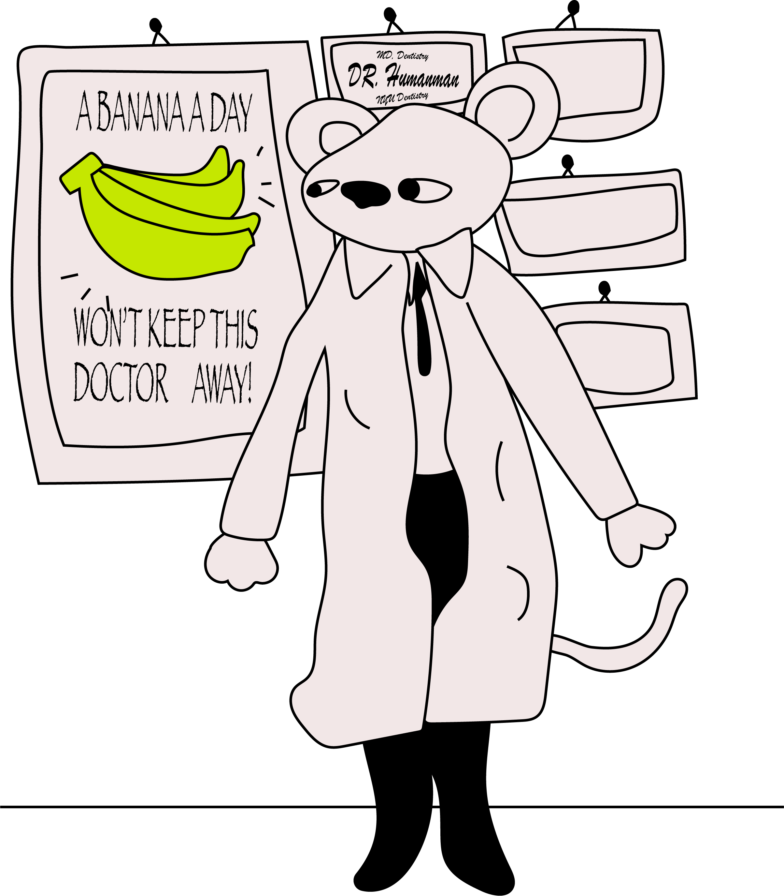

(Whatever you do, please don't drag this webpage left and right with your mouse, adjusting the viewport width and thus moving this orange toothbrush).
I’m Jebediah and I am so freaking scared, like pee my pants scared.
My dentist of 12 years ended up being three monkeys in a lab coat so I kind of have some dental-related trust issues.

actual photo of Dr. Humanman
I am trying to do anything in my will to not go to the dentist.
But by god, wouldn't it so happen to be that I have to brush my teeth in order to avoid going back to the dentist. The main monkey of those three monkeys, Dr. Humanman, always told me to brush my teeth. As I said earlier though, I got hella trust issues so how am I gonna trust that, how am I gonna trust anything anymore. How will I trust that my teeth need to be brushed? How will I trust my teeth to stay in my mouth and not betray me by going into someone else's mouth? How am I going to trust that my new implants aren't actually just made up of several monkey teeth?
Having teeth has been a living hell.